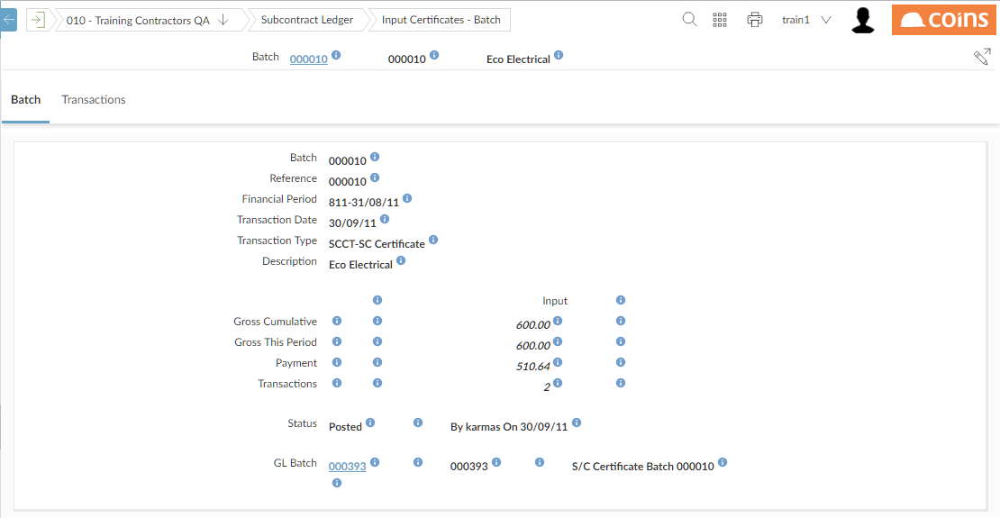

- To show the audit history for the current field (if auditing has been enabled for that field), click
 .
.
- To show the COINSInfo screen, which lists various useful information (including the parameters and variables
This also displays
 images next to the fields - when you move the mouse pointer over these a tooltip shows the field name.
images next to the fields - when you move the mouse pointer over these a tooltip shows the field name.
NOTE
You can also display the COINSInfo screen by:- Pressing Ctrl+Shift+C (in Internet Explorer).
- Pressing Ctrl+Shift+D (in Chrome - if you only have one tab open).
- Pressing Ctrl+Shift or Alt+Shift and clicking the button on a
- Adding &COINSinfo=true to the URL.
- To show the procedure stack when displaying error messages, add &helpMode=stack to the URL.
- To show standard pages without user overrides (see Making Copies of Functions), add &helpMode=stdpage to the URL.
- To show borders round the tables in the pages, add &helpMode=layout to the URL.
- To show function and field names in the help frame, add &helpMode=prompt to the URL. (This shows the field names as used to generate the help; because of help aliases, these may be different from the actual fields on the page.)
- To clear the user/function defaults (removing all filters and sort orders), add &helpMode=clearDefault to the URL.